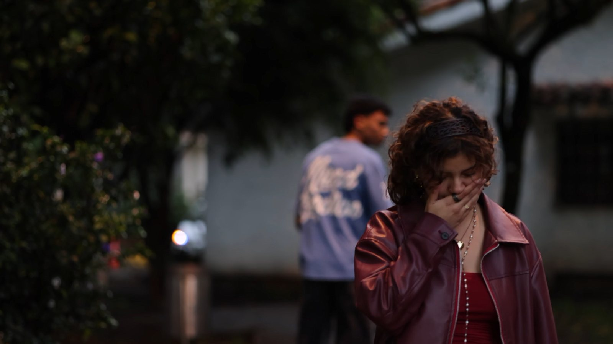
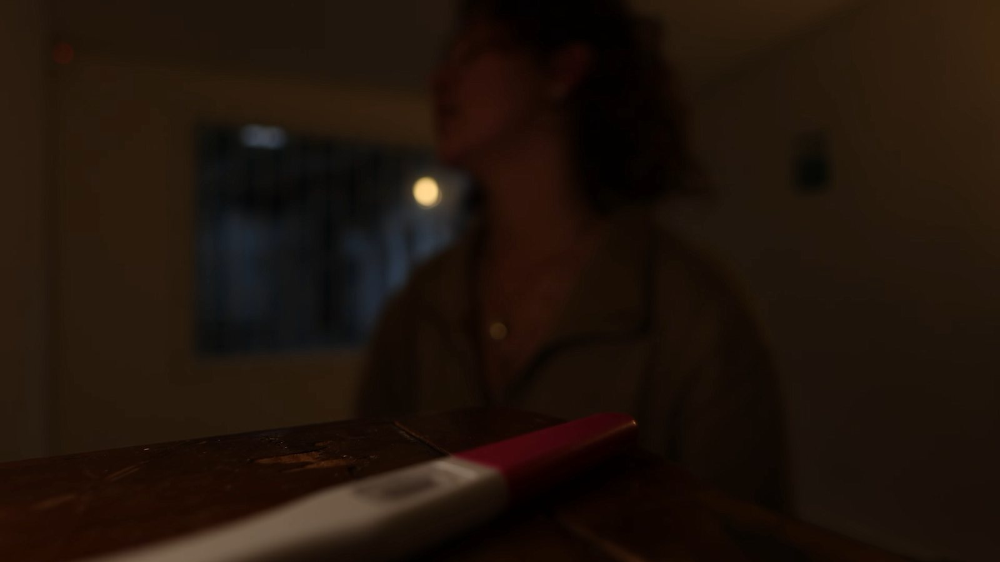
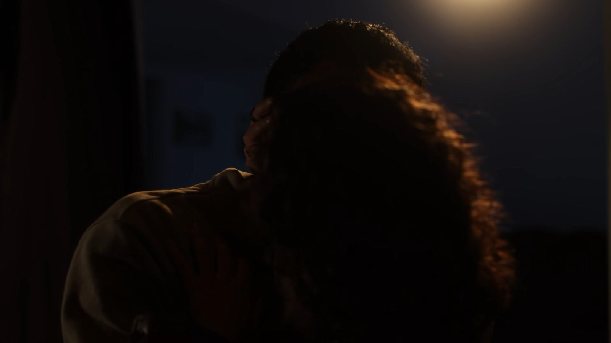
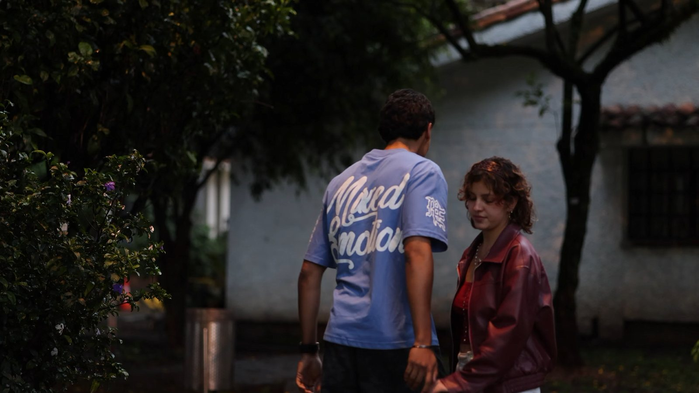
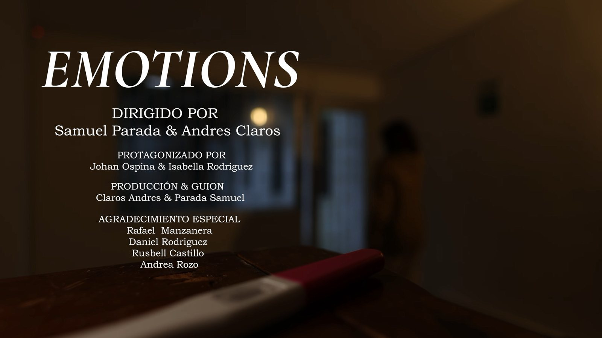

SHORT FILM · CORTOMETRAJE
Emotions
Lo que se siente antes de poder decirlo.
- DIRECCIÓN
- Samuel Parada & Andrés Claros
- GUION Y PRODUCCIÓN
- Andrés Claros & Samuel Parada
- REPARTO
- Johan Ospina & Isabella Rodríguez
- FORMATO
- Cortometraje · 1080p

NIVEL 1 · EL TEASER
Catorce segundos, ni una palabra.

NIVEL 2 · LA HISTORIA
Una pareja, una noche y una prueba que lo cambia todo.
Emotions sigue lo que pasa entre dos personas cuando la noticia llega antes que las palabras: la cercanía del principio, la distancia que aparece de golpe y el silencio de quien todavía no sabe cómo decirlo.
Escribimos y dirigimos el corto entre dos. La regla fue contar con la imagen: casi sin diálogo, con la luz, el encuadre y el foco haciendo el trabajo.
NIVEL 3 · ESTRUCTURA
El recorrido emocional, en cinco planos.
El teaser sube la tensión plano a plano y guarda la razón para el final. Pasa el mouse por cada punto de la curva.

Intimidad
Penumbra y planos cerrados: la historia empieza en lo más cercano, casi sin luz.
NIVEL 4 · FOTOGRAFÍA
Luz baja, piel cálida y un solo rojo.
Casi todo el corto vive en penumbra, con luz de lámpara y tonos tierra. El único color fuerte es el rojo —la chaqueta, la tapa de la prueba—, y aparece justo en los momentos de tensión.
ARRASTRA LA PELÍCULA ▶


El quiebre
Cercanía
La prueba
CÓMO LEERLO · cada franja es el color promedio de una columna del plano; abajo, sus cinco colores dominantes.
NIVEL 5 · CRÉDITOS
Hecho entre amigos.
Un corto independiente: dos directores, dos actores y un grupo de personas que prestó su tiempo y su casa. Pasa el mouse sobre los créditos para detenerlos.
Emotions
- DIRIGIDO POR
- Samuel Parada
Andrés Claros - PROTAGONIZADO POR
- Johan Ospina
Isabella Rodríguez - PRODUCCIÓN & GUION
- Andrés Claros
Samuel Parada - AGRADECIMIENTO ESPECIAL
- Rafael Manzanera
Daniel Rodríguez
Rusbell Castillo
Andrea Rozo